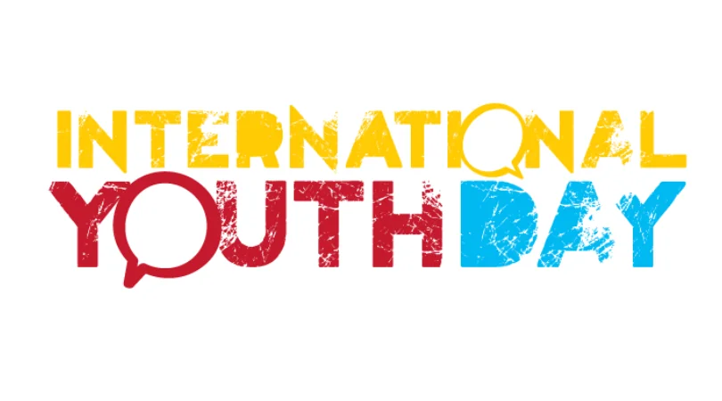

International Youth Day
2024 Theme: From Clicks to Progress:
Youth Digital Pathways for Sustainable Development
Did you know that each year, on August 12, there is an International Youth day?
As young people were born into a digital world, many of you have awareness and or access to digital technology so you may readily connect with this theme.
Using a computer, tablet, mobile phone, AI are likely to already assist you in problem solving, exploring ideas and also facilitate achieving your goals.
Do you realise that youth bring new ideas, fresh eyes with continually evolving digital skills that with focussed actions you can collaborate, lead and/or facilitate achieving global goals, as is the theme for this years international Youth Day: From Clicks to Progress: Youth Digital Pathways for Sustainable Development?
But what are Sustainable Development Goals?
“Achieving the Sustainable Development Goals requires a seismic shift – which can only happen if we empower young people and work with them as equals. "
UN Secretary-General António
Digitalization is transforming our world, offering unprecedented opportunities to accelerate sustainable development. Digital technologies such as mobile devices, services, and artificial intelligence are instrumental in advancing the Sustainable Development Goals (SDGs)
Data generated from digital interactions supports evidence-based decision-making. With profound impact across economic, social and environmental dimensions.
Young people are leading the charge in digital adoption and innovation, with three-quarters of those aged 15 to 24 using the internet in 2022, a rate higher than other age groups. However, disparities persist, particularly in low-income countries and among young women, who often have less access to the internet and digital skills compared to their male counterparts. While there is an urgent need to enhance digital inclusion, youth are largely recognized as “digital natives,” using technology to drive change and create solutions. As the 2030 deadline for the SDGs approaches, the role of young people in digital innovation is essential for addressing global issues.
By celebrating the digital contributions of youth, we can inspire further innovation and collaboration towards achieving sustainable development.
International Youth Day is certainly a day of celebration and recognition what young people do, but it is not the only day you can contribute to achieving sustainable development. Click here to access activities page